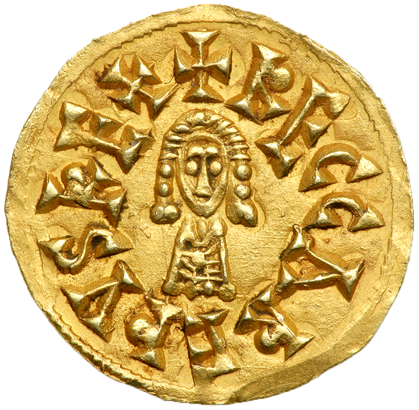

Debate: Arianism and Orthodoxy in Visigothic Spain(gold tremissis of Reccared [RECCAREDUS REX +])
Proposition: The Visigoths should remain Arian and not convert to Orthodoxy.
Team 1: argue for the Proposition
Team 2: argue against the Proposition
In this debate, you are not to argue what modern scholars think about the Arian/Orthodox question, but what people AT THE TIME were arguing about the religious status of Christianity in the Visigothic kingdom. If you are on Team 2, you should ground your arguments in the primary sources I have assigned; if you are on Team 1, you may certainly make references to the primary sources, but you will have to construct arguments based on what you know of the history of the Visigoths, since no Arian writings on the question survive.
Historical background information that you will need to understand, and explain
- The history of
the Visigoths from 409 to 570, including their original conversion to Christianity
- The history of the Visigothic kings from 570 to 586.
- What did the Third Council
of Toledo actually do? Who was
present, and how was it organized?
- What was the reaction of the Visigoths
to the Third Council
of Toledo?
Information on the Visigoths and Arianism
In the Files folder on Canvas, I have put a PDF file called Collins, Visigothic Spain, with a selection from Roger Collins' Visigothic Spain, 409-711 (Blackwell, 2004) that covers the years 569-90 (including Reccared's conversion and the Third Council of Toledo)
Primary source evidence
All the primary sources that we have were written by Catholic authors; thus, the Arian side is not represented at all. Those on Team 1 will have to read between the lines, and come up with arguments that people might have made for remaining Arian (based on history).
Two histories of the Visigothic kingdom were written in the late sixth/early seventh century. I have put selections from both of these in one PDF file called Visigothic Chronicles on Canvas. One of these was by John of Biclaro, and consists of a chronicle (a year-by-year listing of events) that includes events from the Eastern Roman Empire (these are the "Romans" and the various emperors), as well as events from the Visigothic kingdom. I have placed entries for the years 573-592 (pp. 67-80). In the same PDF file, I have put two entries from the History of the Goths written by Isidore of Seville (the brother of Leander): first the section that describes the Visigoths' conversion to Christianity (pp. 84-86), and then the section about Leovigild and Reccared (pp. 102-105). Both of these translations come from K.B. Wolf (trans.), Conquerors and Chroniclers of Early Medieval Spain (Liverpool, 1992).
Several documents survive from the Third Council of Toledo; I have put two of these into one PDF file called Toledo.pdf on Canvas. The first of these is the text known as the Tome presented by King Reccared to the council, which comes from J.N. Hillgarth (trans.), Christianity and Paganism, 350-700 (Philadelphia, 1986). The second text is the introduction from the Acts of the Council of Toledo, in which the events of the council are described; this comes from O.R. Constable (ed.), Medieval Iberia (Philadelphia, 1997).